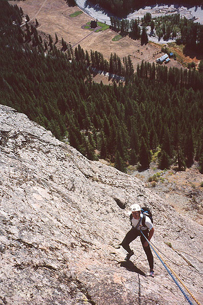
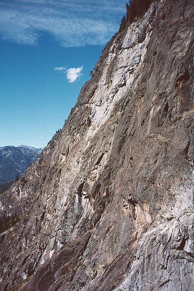
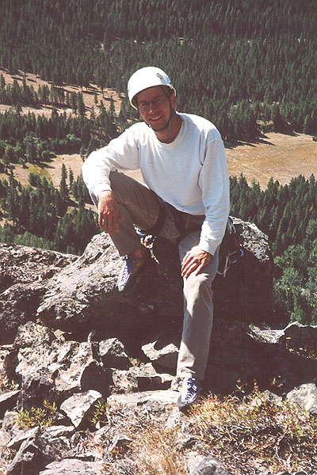

Methow Inspiration Route
- Goat Wall
- Methow Inspiration Route (5.9+)
- September, 2001
A year ago, Bob and I had heard of a multipitch climb near Mazama called the Methow Inspiration Route. It is on the Goat Wall, about 2 miles away from “town.” Any town that only provides a “Porta-Potty” as a restroom gets put in quotes by me. “Town.” So anyway, Bob loathes trad climbing, so the entirely bolted nature of the route really attracted him. It was certainly a long drive, but we were sure the climb would be well worth it.
We had some clouds and rain coming over highway 20, but I was still pretty sure we’d hit sun by the time we got to Washington Pass. Sure enough, the clouds cleared, and Bob got his first look at the incredible spires of this area. At that instant, I doubled over in pain as acid ate away at my vitals. I drank two large orange juices on the way, and forgot how much this can hurt on a near-empty stomach. While Bob marveled at the towers I hung onto my breakfast in a cold sweat. As the scenery softened, so did my consternation, and eventually all was made well in the “town.”



We parked at the approximately right place to head up the hillside. As instructed, we followed animal trails and crashed through some brush to reach a large scree field. Sticking near trees when possible, we ascended the very loose debris. At one point, a large rock fell onto my leg, scraping my shin pretty good. I frightened Bob pretty nicely with pitiful yelping. Instantly, the climb felt more lonely and “alpine,” so there was a good side effect.
We found the start of the route, marked by a large bolt. I took the first pitch, which started easy then became tricky (about 5.8) near the top. The delicate moves woke us up, and we began to enjoy the open surroundings. The flat valley floor contained brown, grassy fields and stands of timber. A winding river went down the middle, with the straight road nearby. Broad valleys continued to the east, and the mountains rose to the west and south, brooding with high, gray clouds.
Bob and I each led another pitch, with some more exciting terrain before a walk on a low-angled slab. We drank some water, then Bob took off for a short but very difficult pitch. He clipped a bolt just above a ledge, and searched for the best way to reach the next bolt. This section is badly set up, since a very hard move has to be made above the ledge, and the first bolt won’t protect you. Bob estimated the move to be about 5.10c. When I got up to it, I struggled, and finally had to grab the next quick-draw. I think a handhold must of broken off! (okay if you know this didn’t happen, just keep it to yerself for the sake of my fragile self-esteem) Good lead, Bob!
Now for the final pitch, which was very exciting. It is steep, and very sustained, but with good protection. I remember a series of delicate moves, as I got higher above Bob. I had to work to stay relaxed and breathing, since the climbing was close to my limit outside. Anyway, the first half of this long (50 meter) pitch is stellar, then I ran into crumbly broken rock. On a ledge, I clipped an “alternate” belay station, and headed up from there. This avoided a 15 foot section of the regular route that looked pretty rotten. I felt it was possible to pull something off onto Bob, so I took an easier line 6 feet to the left, then rejoined the regular route as the rock improved. Bob came up, as impressed with my lead as I was with his on the pitch before! We unroped and scrambled to a high viewpoint. Goat Wall actually continues much higher, I’m sure there will be many climbs here in the future. Lunch was excellent perched high above the valley. Bob had seen a hawk soaring, and he told me a fable involving a stone-cutter and a mountain. There is nothing like sitting in the sun at the top of a climb!
Anyway, it was time to begin the rappels. I started down, and waited a while for another party climbing the last pitch. They were a nice pair. The second rappel brought us to another party (popular route), then for the last three we had the rock to ourselves again. With the long low-angle sections of this climb, it is easy for the ropes to get tangled, and we spent some time dealing with this. Bob set up the final rappel to the ground, and we hiked out.
We found the trail this time, which led us right to the road. So for all you folks who might be interested, yes, there is a nice trail right from the road!
The long drive back was made much longer by a stupid automatic light on the highway. We dealt for close to an hour with stop and go traffic in the middle of nowhere! This drive really tired us out, but finally, we were home. Thanks for the fun climbing, Bob!